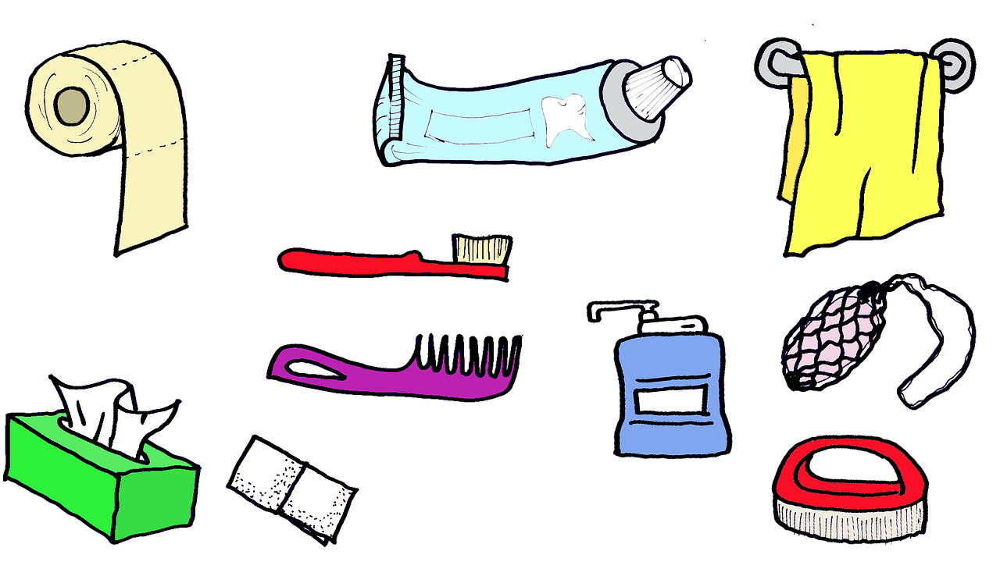

Welcome to Natürliche Gesundheit
Bakterien im Bart: Studie über Männerhygiene liegt daneben - DER SPIEGEL
2020.12.21 18:36Zum Inhalt springen DER SPIEGEL Gesundheit Abonnement Abo Anmelden Menü öffnen News Ticker SPIEGEL Plus Audio Account Menü Startseite Gesundheit Diagnose & Therapie Hygiene
Bakterien im Bart: Studie über Männerhygiene liegt daneben
EILMELDUNG — __proto_headline__ EILMELDUNG — __proto_headline__ Anmelden Abonnement Startseite Schlagzeilen Coronavirus Meinung Newsletter SPIEGEL+ Politik Bundesregierung Bundestag Ausland US-Wahl 2020 Europa Nahost Globale Gesellschaft Asien Afrika Panorama Justiz & Kriminalität Leute Gesellschaft Bildung Sport Fußball Fußball-Liveticker Bundesliga Champions League Formel 1 Formel-1-Liveticker Wintersport Wirtschaft Börse Verbraucher & Service Versicherungen Unternehmen & Märkte Staat & Soziales Young-Money-Blog Brutto-Netto-Rechner Wirtschaft erleben Städte der Zukunft manager Wissenschaft Klimakrise Mensch Natur Technik Weltall Medizin Netzwelt Netzpolitik Web Gadgets Games Apps Kultur Kino Musik TV Literatur SPIEGEL-Bestseller Leben Reise Stil Gesundheit Familie Psychologie Job & Karriere Start Geschichte Zeitzeugen Erster Weltkrieg Zweiter Weltkrieg DDR Film Mobilität Tests Fahrkultur Dein SPIEGEL Audio Video Tests Bestseller Backstage English World Europe Germany Business Zeitgeist Newsletter Global Societies Themen Partner-Inhalte Anzeige Familien in der Krise Audioqualität Marktplatz Anzeige Sportwetten Jobsuche Kreditvergleich Immobilienbewertung Tarifvergleich Lotto Anzeige Eurojackpot LOTTO 6aus49 GlücksSpirale Gutscheine Anzeige Adidas Alternate Amazon Check24 Douglas Expedia H&M Lidl Lieferando Otto Spiele Kreuzworträtsel Solitaire Sudoku Mahjong SPIEGEL-Heft Heftarchiv Abo-Angebote Shop Alle Magazine SPIEGEL WISSEN Dein SPIEGEL SPIEGEL GESCHICHTE SPIEGEL EDITION SPIEGEL LESEZEICHEN SPIEGEL COACHING SPIEGEL TV SPIEGEL Live RSS-Feed SPIEGEL Media MANUFACT Partner-Management Sales Solutions Programmatic Advertising SPIEGEL Ed SPIEGEL Akademie Services Bußgeldrechner Ferientermine Uni-Tools Währungsrechner Versicherungen Nachrichtenarchiv Facebook Twitter Wo Sie uns noch folgen können Foto: CorbisBakterien im Gesichtshaar Ist ein Bart unhygienisch?
In der Gesichtsbehaarung von Männern tummeln sich üble Keime, wie es sie sonst nur in Toiletten gibt. Das soll eine Studie in den USA ergeben haben. Aber stimmt das wirklich? Der Faktencheck. Von Jörg Römer • 08.06.2015, 17.49 Uhr E-Mail Messenger WhatsApp Link kopierenLiebe Hipster, ihr müsst jetzt ganz stark sein: Ihr habt Schmutz im Bart. Bei euch tummeln sich Bakterien im Gesicht, die sonst nur dort zu finden sind, wo man seine Notdurft verrichtet. Kribbelt es manchmal in eurer Haarpracht rund um das Kinn? Das sind vermutlich die Mikroben, die zu Tausenden vom Bart Besitz ergreifen. So legte es jedenfalls eine Meldung über eine Studie nahe, die erst kürzlich die Runde machte.
Beim "Focus" war zu lesen, dass es in manchen Bärten schmutziger sei als in Toiletten, auch RTL hatte berichtet. Einige News-Seiten gaben Hygienetipps oder warnten gar vor intimem Kontakt mit einem Bartträger. "Die Keime übertragen sich auch beim Küssen", so die " Wirtschaftswoche ". Und so mancher bärtige Leser dürfte sich gefragt haben, ob er sich jetzt wieder ein babyhautglattes Gesicht wie in der Rasierklingenwerbung zulegen soll?
Notwendig ist das nicht, liebe Bartträger. Denn die sogenannte Studie ist nichts weiter als eine Mini-Stichprobe des US-Senders KOAT Action 7 News aus Albuquerque im US-Bundesstaat New Mexico - mit einer ernsthaften klinischen Studie hat sie nichts zu tun. Die Station hatte ihre Reporterin losgeschickt, um auf der Straße bei einer "Handvoll tapferer Männer" Abstriche aus dem Fusselbart zu nehmen. Es dürften also nur eine Handvoll Proben gewesen sein - eine verschwindend geringe Zahl.
Foto: Corbis FotostreckeUS-Untersuchung: Im Vollbarte des Propheten
6 BilderMit den Barthaarabstrichen hat sich die Journalistin an ein Labor gewandt und sie dort analysieren lassen. "Normalerweise bin ich nicht so schnell überrascht. Aber hier war ich es", sagt der Mikrobiologe John Golobic, der die Untersuchung für das Institut Quest Diagnostics durchgeführt hat.
Einige der Bartproben sollen viele übliche Bakterien enthalten haben, manche sogar Darmkeime. "So etwas findet man sonst in Fäkalien", sagte der Wissenschaftler. Krank machen würden die Bakterien aber nicht. Über Zahl, Art oder Mengen schweigt sich der Beitrag ganz aus. Sind die Ergebnisse, die das Bartstreichen mit einem Griff ins Klo vergleichen, ernst zu nehmen?
Tatsächlich kam eine Studie aus dem Jahr 2000 zu dem Ergebnis, dass bärtiges OP-Personal trotz Mundschutz mehr Bakterien absondert als glattrasiertes. Allerdings wurden die zehn bärtigen Studienteilnehmer gebeten, ihren Kopf mit der Maske kräftig zu schütteln, während die Partikel auf Nährböden aufgefangen wurden - eine Praxis, die im OP eher selten praktiziert werden dürfte.
Darmbakterien auf Handys oder Geldscheinen
Andere Studien entlasten den Bart als Bakterienschleuder: Bei einer Untersuchung der Gesichtsbehaarung von Krankenhauspersonal fanden Forscher zwar Bakterien. Die Arbeit, die im "Journal of Hospital Infection" veröffentlicht wurde, kam aber zu dem Schluss, dass die Wahrscheinlichkeit, als Bartträger resistente Keime auf der Haut zu haben, sogar etwas geringer ist als bei Personen ohne Bart. Insgesamt sei die Besiedlungsdichte bei Glattrasierten und Gesichtshaarträgern ähnlich. Deshalb empfehlen die Forscher aufgrund ihrer Daten, dass ungeachtet der Gesichtsbehaarung alle Mitarbeiter bei hygienisch-sensiblen Tätigkeiten Mundschutz tragen sollten.
Und dass die Forscher sowie auch der Sender in Bärten Darmbakterien gefunden haben, ist nicht besonders verwunderlich. Sie finden sich überall: Auf Handys, Geldscheinen oder anderen Alltagsgegenständen. Und auf der Haut: 205 Gattungen und rund tausend verschiedene Bakterienarten haben Forscher auf dem größten Organ von gesunden Menschen gefunden, berichtete das Magazin "Science" 2009 . Die größte Vielfalt entdecken sie übrigens weder im Gesicht noch in den Achselhöhlen, sondern auf dem Unterarm.
Mit Fäkalien hat das aber nichts zu tun - Bakterien wie E. coli sind nicht direkt mit Exkrementen gleichzusetzten, wie es in vielen Meldungen zu der US-Stichprobe kolportiert wurde. Und natürlich wurden auch keine Fäkalien in den Bärten gefunden.
Wo ein rauschender Vollbart die Gesichtsfläche vergrößert, ist eben auch Platz für Keime. Die Haarpflegespezialistin Carol Walker vom Birmingham Trichology Centre erklärte der britischen "Daily Mail", dass Barthaare stärker gekräuselt seien und die Oberfläche vergleichbar mit Dachziegeln sei, die ineinander geschoben werden. Diese Struktur würde es Keimen leichter machen, daran haften zu bleiben.
Aber es gibt keine Anzeichen dafür, dass die Konzentration im Bart eine höhere oder gar eine gefährlichere wäre als woanders. Niemand muss sich also den Bart abrasieren - pflegen sollte man ihn aber schon. Zudem empfiehlt Golobic regelmäßiges Händewaschen. Das sollte allerdings auch ohne Vollbart im Gesicht völlig selbstverständlich sein.
Diskutieren Sie mit Feedback Mehr lesen über Hygiene Haut Verwandte Artikel • Verblüffende Vielfalt: Der Bakterien-Zoo auf der Haut Spiele mehr Spiele Kreuzworträtsel Solitaire Sudoku Mahjong Bubbles Exchange Power Of 2 Doppel Rushtower Sudoken Street Wortblitz Fibonacci Gumblast Wimmelbild Skiracer Trivial Pursuit Serviceangebote von SPIEGEL-Partnern Gutscheine Anzeige IKEA Gutscheine Cyberport Gutscheine Amazon Gutscheine Lidl Gutscheine Top Gutscheine Alle Shops Auto Bußgeldrechner Firmenwagenrechner Kfz-Versicherungsvergleich Autokredit Job Brutto-Netto-Rechner Uni-Tools Kurzarbeitergeld-Rechner Jobsuche Finanzen Währungsrechner Versicherungen Gehaltsvergleich Kreditvergleich Immobilienbewertung Strom/Gas-Vergleich Handytarife Freizeit Eurojackpot LOTTO 6aus49 GlücksSpirale Sportwetten Gutscheine Bücher bestellen Ferientermine Spiele Bundesliga-Experten Alle Magazine des SPIEGEL DER SPIEGEL SPIEGEL CHRONIK SPIEGEL SPEZIAL Dein SPIEGEL SPIEGEL WISSEN SPIEGEL EDITION SPIEGEL GESCHICHTE SPIEGEL LESEZEICHEN SPIEGEL COACHING SPIEGEL Gruppe Abo Shop manager magazin Harvard Business manager buchreport Werbung Jobs MANUFACT SPIEGEL Akademie SPIEGEL Ed Impressum Datenschutz Nutzungsbedingungen Cookies & Tracking Kontakt Hilfe Facebook Twitter Wo Sie uns noch folgen könnenSPIEGEL+-Zugang wird gerade auf einem anderen Gerät genutzt
SPIEGEL+ kann nur auf einem Gerät zur selben Zeit genutzt werden.
Hier weiterlesenKlicken Sie auf den Button, spielen wir den Hinweis auf dem anderen Gerät aus und Sie können SPIEGEL+ weiter nutzen.
Warum sehe ich diesen Hinweis? Zurück zum Artikel Teilen Twitter Facebook E-Mail Messenger WhatsApp Link kopieren 6 Bilder US-Untersuchung: Im Vollbarte des Propheten 1 / 6Bärte sind schon länger ein modisches Statement und beliebt bei jungen Trendsettern. Doch laut einer US-Studie sollen im Gesichtshaar vieler Männer Keime lauern. Einige davon findet man sonst in Fäkalien, so ein Experte.
Foto: Corbis 2 / 6Auch "Bild"-Chefredakteur Kai Diekmann verhalf dem ausschweifenden Bart zur Bekanntheit. Inzwischen hat er ihn abrasiert. Das ist aus hygienischen Gründen aber nicht notwendig - selbst wenn in der US-Untersuchung angeblich schlimme Keime entdeckt wurden. Denn die Studie weist Mängel auf.
Foto: Jens Kalaene/ picture alliance / dpa 3 / 6Die entdeckten Mikroben sind ganz normale Darmbakterien, die überall zu finden sind - auf der Haut, auf Handys und Geldscheinen. Diese bärtigen Models bei einer Modenschau können also beruhigt sein.
Foto: © Marcos Brindicci / Reuters/ REUTERS 4 / 6Eine andere Studie hat das Gesichtshaar von OP-Personal trotz Mundschutz untersucht. Tatsächlich sonderten die zehn bärtigen Studienteilnehmer mehr Bakterien ab als glattrasierte. Allerdings wurden sie gebeten, ihren Kopf mit der Maske kräftig zu schütteln, während die Partikel auf Nährböden rieselten - eine Praxis, die im OP eher selten praktiziert werden dürfte.
Foto: FABRIZIO BENSCH/ REUTERS 5 / 6Insgesamt ist die Besiedlungsdichte bei Glattrasierten und Gesichtshaarträgern aber ähnlich - zu diesem Ergebnis kommt eine andere Untersuchung. Bakterienschleudern sind Bärte also nicht unbedingt.
Foto: Corbis 6 / 6Pflegen sollte man den Bart aber schon. Auch regelmäßiges Händewaschen empfehlen Experten - eigentlich selbstverständlich.
Foto: TMNInsgesamt ist die Besiedlungsdichte bei Glattrasierten und Gesichtshaarträgern aber ähnlich - zu diesem Ergebnis kommt eine andere Untersuchung. Bakterienschleudern sind Bärte also nicht unbedingt.
Foto: Corbis Teilen Sie Ihre Meinung mitMelden Sie sich an und diskutieren Sie mit
Anmelden